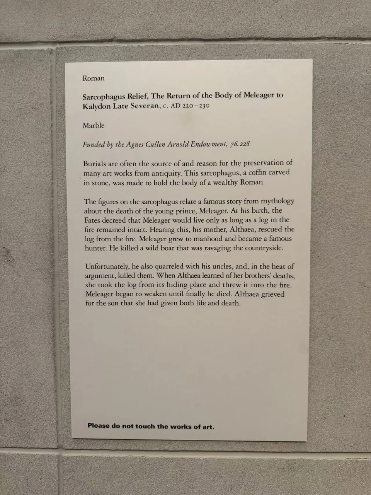

ROMAN SARCOPHAGI / R22
墨勒阿格洛斯遗体返回卡吕冬石棺前板
墨勒阿格洛斯被抬起的身体横在行列中间。周围的人仍在走动、回首、伸手，死者却不再回应。

- 年代
- 220–230年
- 材料
- 大理石
- 收藏
- 休斯顿美术馆
- 观看地点
- 休斯顿美术馆 · 休斯顿
- 馆藏号
- 76.228
遗体返回卡吕冬
左侧低头的马、承托遗体的人与右方展开手臂的人，把归途组织成一道长长的横向浮雕。衣褶仍随步伐起伏，英雄的身体却失去了支撑自己的力量。现场展签讲述他的生命与一段木柴相系：母亲曾将木柴从火中救出，后来因他杀死舅父而重新投入火中，终于又为儿子哀悼。
这块前板约作于220—230年。与卢浮宫《墨勒阿格洛斯之死》并看，重点可以放在生者如何围绕死者：同一神话，一件铺陈死亡与哀悼，一件把失去留在返家的途中。休斯顿美术馆于1976年购入本件。 [28]
现场展签 · 1张
